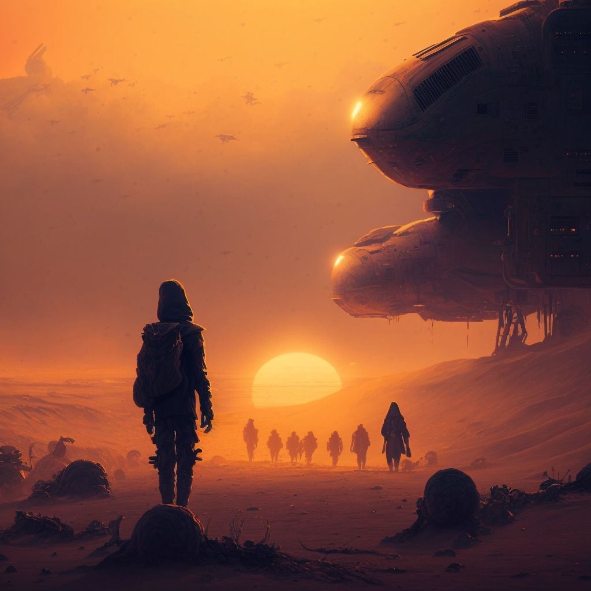
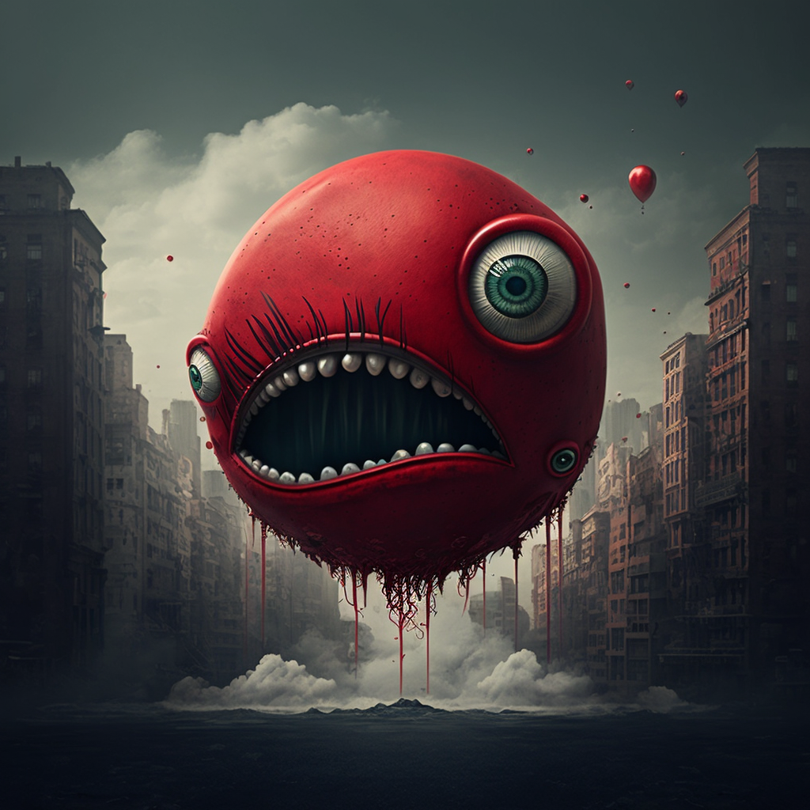

300 years ago, the human race was almost wiped out by a series of natural and technological disasters. With few survivors, humanity worked hard to find a solution. Finally, they discovered a portal to a new world inhabited by the Valurians, an advanced and peaceful species. However, not everything went as planned.
When humans appeared in Valrur, they were met with hostility by the Valurians. Encounters between the two races always ended in conflict, and humans eventually developed advanced powers and technologies that helped them confront the Valurians. Over time, a group of powerful humans joined together and formed The Legion, a team dedicated to protecting and expanding human interests in Valrur.
They devised a plan called Ground Zero, which involved invading one of Valrur's great metropolises, called Zalvoria. Before the invasion of the Zalvoria metropolis, The Legion members gathered and combined their powers to create a dimensional rift in the middle of the city. They planned to open the rift and enter the city through it, thus avoiding the Valurian defenses that protected the conventional entrances.
As the members of The Legion gathered to invade the metropolis of Zalvoria, another member of the team, an infiltration and intelligence expert named Sieforjn, was on a solitary mission. He had discovered a mysterious city in a remote corner of Valrur and decided to investigate to uncover its secrets.
Sieforjn spent days infiltrating the city, lurking in the shadows and avoiding detection by Valurian patrols. He discovered that the city was a secret military research center, where Valurian scientists conducted bizarre experiments on living beings, seeking to create biological weapons for use in their wars.
While exploring the laboratory corridors, Sieforjn saw horrible things - humans and other creatures locked in cages, subjected to cruel tests and experiments. He shrank back in fear, but also felt a wave of anger and sadness.
Sieforjn continued his exploration, skulking through the shadows and unraveling the secrets of the facility. He found several bizarre experiments, such as the nectar that made living beings follow whoever used it like bees, and the dog that could disappear without a trace, becoming invisible.
With this new information in hand, Sieforjn decided to report his findings to The Legion. He knew they needed to be aware of the horrors that were happening in the shadows.
The rift opened with a loud boom, and The Legion members jumped through it, entering the city undetected. They moved quickly through the corridors, taking down Valurian robots and avoiding security patrols. As they approached the center of the city, the battle began to intensify, with the Valurians gathering around the invading team.
Finally, The Legion members reached the heart of the city, where a massive metal structure rose towards the sky. They combined their powers once again and created an even larger rift, slicing the structure in half. The impact was tremendous, and the city shook with the force of the blow. The Valurians went on high alert, but it was too late.
With the city's structure shattered, The Legion team advanced, facing Valurian defenses with powerful blows and spells. The battle was intense, with fire and lightning powers exploding in all directions. Valurian robots flew through the air, and entire buildings crumbled around them.
In the end, Phantom emerged, decimating all the robots in the city with overwhelming force. The Valurians on site were shocked, unsure of what to do in the face of Phantom's power.
The Legion explored the metropolis and found ancient ruins with several inscriptions. They deciphered the language and activated a magic book, which caught the attention of an alien ship that appeared above the metropolis.
A goddess warrior named Galladriel descended from the ship and declared herself the Hunter. She told The Legion that their adventure was just beginning, because in Valrur, a mythical being named Baloonni had been awakened by magic.
Hunter explained that Baloonni was an extremely powerful and dangerous being that had been sealed away for a long time. With magic being used again in Valrur, it had been released and posed a threat to all races on the planet. The Legion decided that they needed to act and find a way to stop Baloonni.
With the arrival of the Hunter and the discovery of other worlds through the multiversal portals that opened during the battle, The Legion realized that Baloonni's threat was greater than they had imagined. With the possibility that the creature could affect other universes, the team joined forces with other races to combat the threat.
The Hunter introduced allies, Nilfheim and Galaxion, worlds that had been affected by Baloonni's activities. The inhabitants of these worlds joined the fight and together formed an army to face the threat.
After their last battle in Zalvoria, Nisenjugo and Mint were searching for Baloonni and new multiversal portals.
During one of their travels, they came across a city called Lork, which was completely closed off and surrounded by a multiversal portal. The portal opened a rift where Japanese people were trying to contact the Valurians for knowledge exchange between multiverses, but the Valurians were refusing and imprisoning anyone who crossed the portal, fighting to defend the city of Lork.
Without hesitation, Nisenjugo decided to help the Japanese defend the portal. Mint, on the other hand, went in search of a Japanese assassin spy who was infiltrated among the Valurians and could trigger a huge war between them.
Nisenjugo and Mint worked together to prevent a war. Finally, they managed to close the multiversal portal, preventing the war.
As a reward for helping the city against the multiversal portal, Mint was allowed by the Valurians to see the ruins beneath the city, where he discovered that Baloonni could be controlled by a magical flower called White Lily.
He set off alone in search of the flower to prevent further disasters, and he found it and used it against Baloonni, finally controlling it after it devastated a city.
Using Baloonni's psychic powers, he began to help the nearby Valurians, until the arrival of The Legion, who, after seeing Mint controlling Baloonni, did not accept such an act, as he could still break free from the magic of White Lily, which was not infinite.